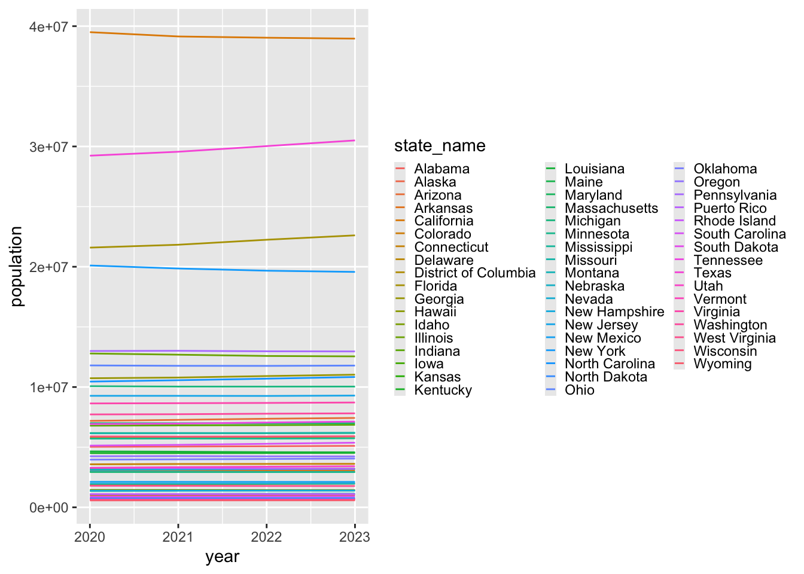

Analyzing the effects of the COVID-19 pandemic on the population in the United States
Abstract
Introduction
Methods
The dataset used to collect population data during the COVID-19 era came from the United States Census Bureau, which contained information about the average yearly population from 2020-2023 in all fifty states plus Puerto Rico and the District of Columbia (Bureau, n.d.b.). Data was wrangled to only include information about the yearly population for each state. Based on graph 1, since the population barely changes from 2020 to 2023, it is assumed that the population in 2024 will be similar. To get population data for 2024, the average population from 2020 to 2023 was calculated.
To collect information about the effect of COVID-19, data about weekly COVID cases, weekly COVID deaths, weekly hospitalizations, weekly COVID-19 vaccinations, and weekly total deaths for all fifty states, Puerto Rico, and the District of Columbia from 2020-2023 came from 4 separate json datasets from the CDC (COVID-19 Vaccination Trends, n.d.; Provisional COVID-19 Death Counts, n.d.; United States COVID-19 Hospitalization, n.d.; Weekly United States COVID-19, n.d.). For weekly COVID cases, data was wrangled to identify the date, state (i.e., all 50 states, Puerto Rico and District of Columbia), year, and epi-week of only a COVID-19 case occurrence (Weekly United States COVID-19, n.d.). For weekly COVID deaths and weekly total deaths, data was wrangled to identify the date, state (i.e., all 50 states, Puerto Rico and District of Columbia), year, and epi-week of only a COVID-19 death or a total death occurrence (Provisional COVID-19 Death Counts, n.d.). For weekly COVID-19 hospitalizations, data was wrangled to identify the date, state (i.e., all 50 states, Puerto Rico and District of Columbia), year, epi-week, and converted from daily to weekly hospitalizations after collapsing by week and only keeping data with observations for the whole week (United States COVID-19 Hospitalization, n.d.). For weekly COVID-19 vaccinations, after filtering for `Admin` information, data was wrangled to identify the date, state (i.e., all 50 states, Puerto Rico and District of Columbia), year, and epi-week for the total weekly series cumulative and booster shot given (COVID-19 Vaccination Trends, n.d.). If needed, state abbreviations were added to each dataframe using state information provided from class (Irizarry, 2024).
A dataset was created to combine population and COVID-19 data together from 2020 to 2024 by matching based on the date, state, year, and epi-week of occurrence. This created a dataframe where the population, COVID cases, COVID deaths, hospitalizations, vaccinations, and total deaths were all merged together.
To find excess deaths, information about population data for all fifty states, Puerto Rico, and the District of Columbia from 2010-2020 was also collected from the United States Census Bureau (Bureau, n.d.a.) while the information about total deaths per week from 2014-2019 in all fifty states, Puerto Rico, and the District of Columbia were gathered from the CDC (Weekly Counts of Deaths, n.d.). The census data from 2010 to 2020 was subsetted to 2014 to 2019 as the total deaths before the pandemic were only from 2014 to 2019. The data on total deaths before the pandemic would ideally be from a larger time frame (i.e., 2000 to 2019). However, the largest dataset found from the CDC was from 2014 to 2019. Therefore, the analysis sacrificed more data for more consistency as all information about total deaths came from the CDC. For census information, data was wrangled to only keep the population for each year for all 50 states, Puerto Rico, and the District of Columbia. For weekly total deaths information, data was wrangled to only keep the total deaths information for each state, date, epi-year, and epi-week. Afterwards, state abbreviations were added to each dataframe using state information provided from class (Irizarry, 2024).
Another dataset was created to combine population and total deaths together from 2014 to 2019 by matching based on the date, state, year, and epi-week of occurrence. This created a dataframe where the population and total deaths were all merged together.
Results
Discussion
References
Bureau, U. C. (n.d.a). National Population Totals: 2010-2020. Census.Gov. Retrieved December 17, 2024, from https://www.census.gov/programs-surveys/popest/technical-documentation/research/evaluation-estimates/2020-evaluation-estimates/2010s-totals-national.html
Bureau, U. C. (n.d.b). State Population Totals and Components of Change: 2020-2023. Census.Gov. Retrieved December 17, 2024, from https://www.census.gov/data/tables/time-series/demo/popest/2020s-state-total.html
COVID-19 Vaccination Trends in the United States,National and Jurisdictional | Data | Centers for Disease Control and Prevention. (n.d.). Retrieved December 19, 2024, from https://data.cdc.gov/Vaccinations/COVID-19-Vaccination-Trends-in-the-United-States-N/rh2h-3yt2/about_data
Irizarry, R. (2024), Introduction to Data Science Repository. GitHub repository. https://raw.githubusercontent.com/datasciencelabs/2024/refs/heads/main/data/regions.json
Provisional COVID-19 Death Counts by Week Ending Date and State | Data | Centers for Disease Control and Prevention. (n.d.). Retrieved December 19, 2024, from https://data.cdc.gov/NCHS/Provisional-COVID-19-Death-Counts-by-Week-Ending-D/r8kw-7aab/about_data
United States COVID-19 Hospitalization Metrics by Jurisdiction, Timeseries – ARCHIVED | Data | Centers for Disease Control and Prevention. (n.d.). Retrieved December 19, 2024, from https://data.cdc.gov/Public-Health-Surveillance/United-States-COVID-19-Hospitalization-Metrics-by-/39z2-9zu6/about_data
Weekly Counts of Deaths by State and Select Causes, 2014-2019 | Data | Centers for Disease Control and Prevention. (n.d.). Retrieved December 17, 2024, from https://data.cdc.gov/NCHS/Weekly-Counts-of-Deaths-by-State-and-Select-Causes/3yf8-kanr/about_data
Weekly United States COVID-19 Cases and Deaths by State—ARCHIVED | Data | Centers for Disease Control and Prevention. (n.d.). Retrieved December 19, 2024, from https://data.cdc.gov/Case-Surveillance/Weekly-United-States-COVID-19-Cases-and-Deaths-by-/pwn4-m3yp/about_data